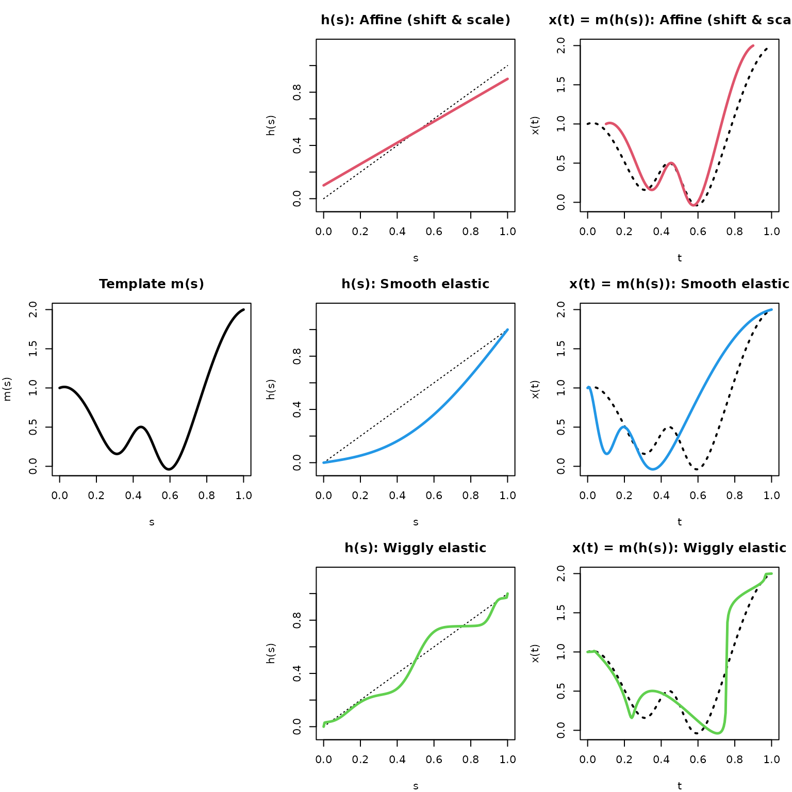
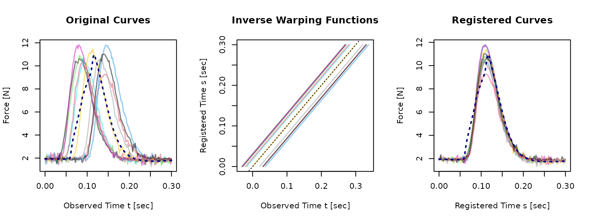
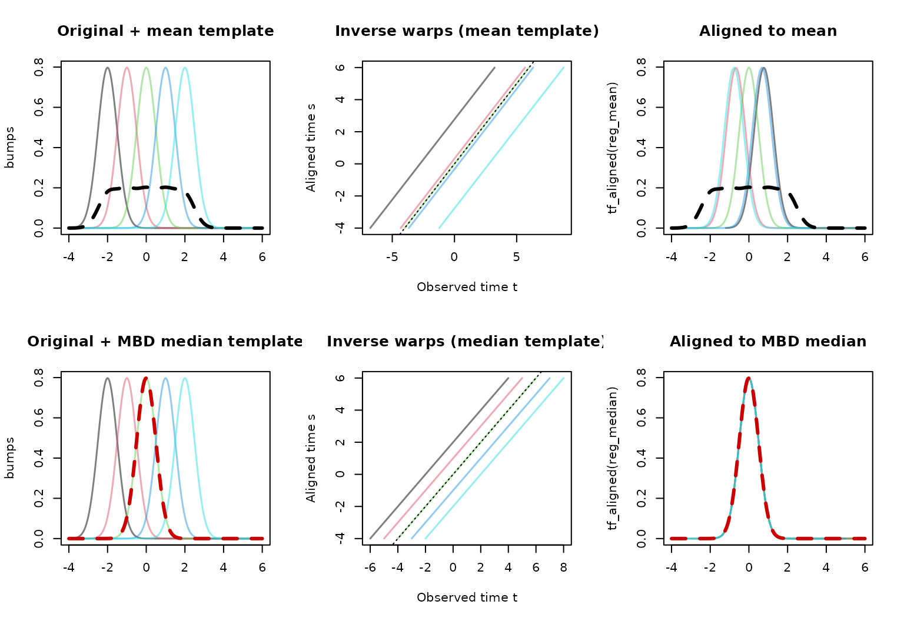
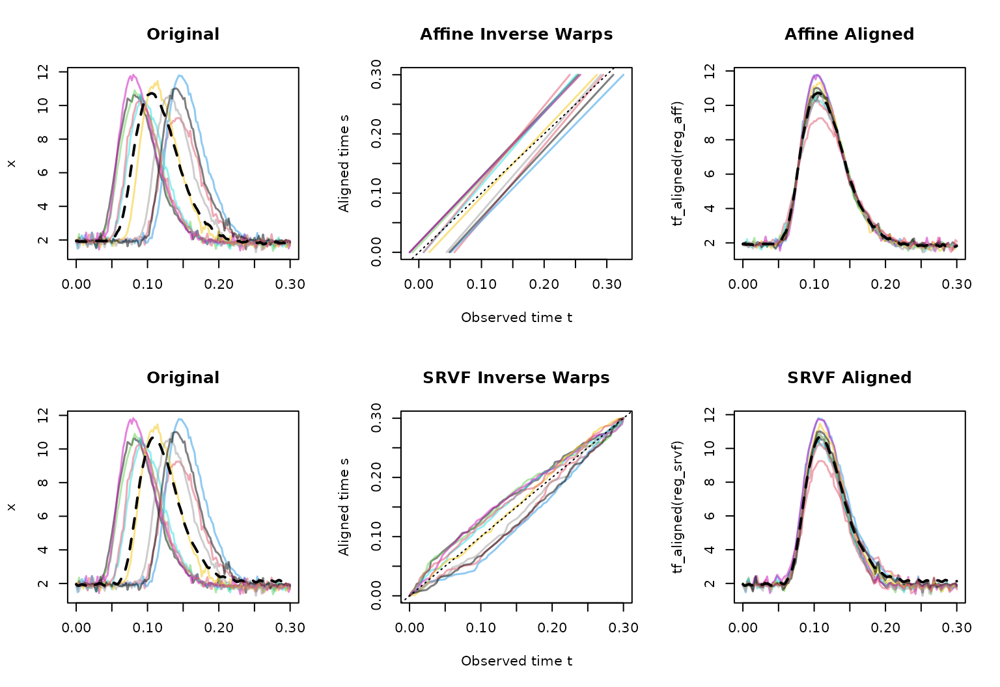
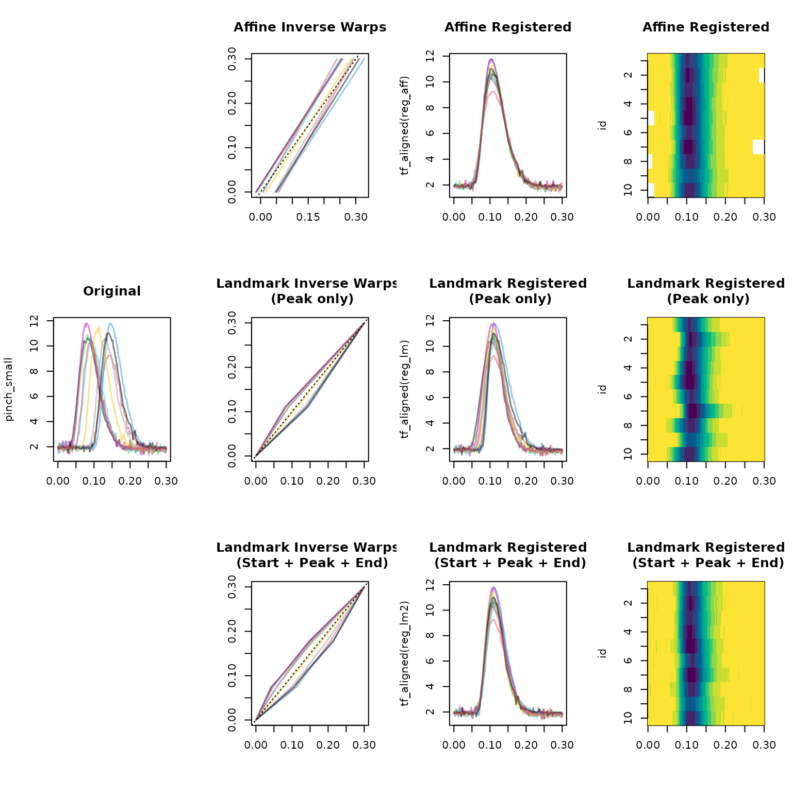
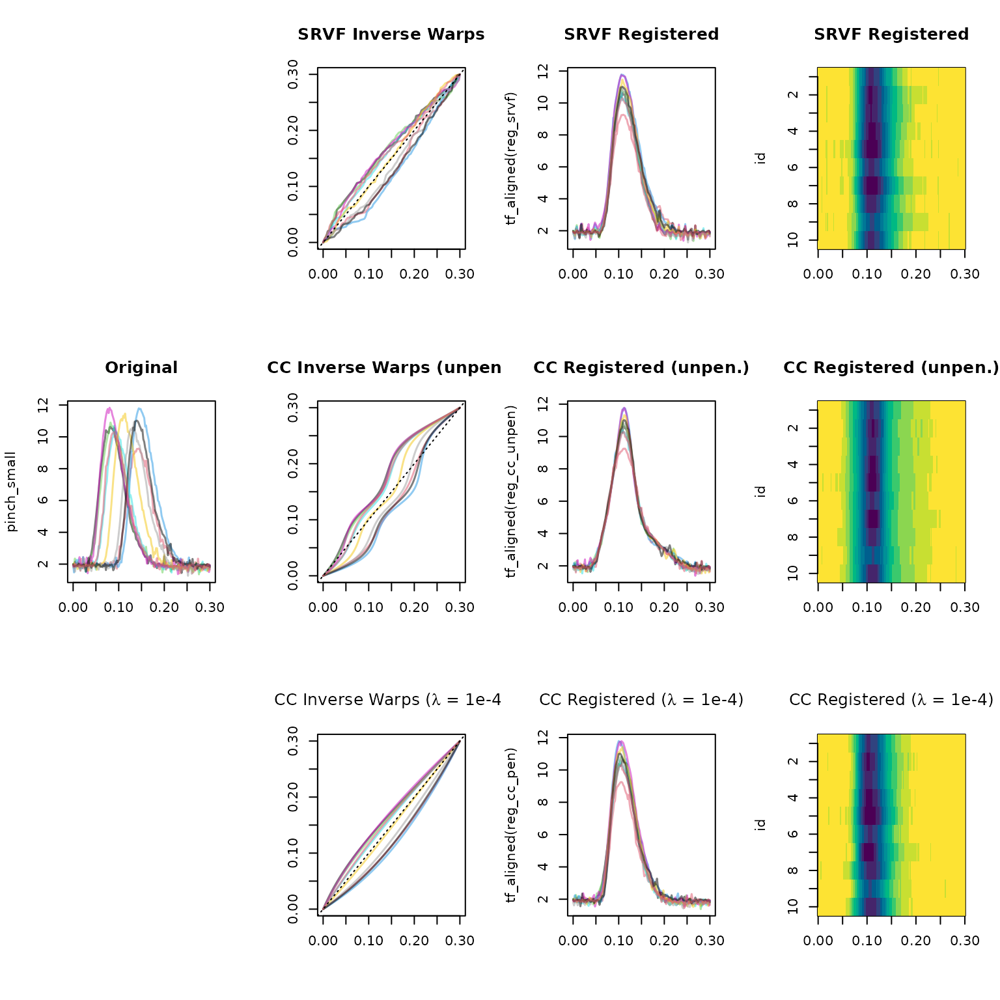

Curve Registration: Practical Guide and Pitfalls
Source:vignettes/x06_Registration.Rmd
x06_Registration.RmdRegistration: Template, Warp, Domain
Registration aligns functions in time by reducing phase variation (timing differences - “horizontal” variability) while preserving amplitude variation (shape/height differences - “vertical” variability).
Use registration if:
- Curves have broadly similar shapes that are shifted, stretched or
compressed relative to each other
- and your analysis does not care about these timing differences
- or you want to analyze these timing differences separately from shape differences.
- You can interpret both the target template and the resulting warps in domain terms.
Do not use registration as a (default) preprocessing step if:
- Curves come from clearly different shape classes/clusters (see below).
- Timing differences are meaningful for your question and/or cannot be viewed in isolation from shape differences.
- The time deformation from registration creates implausible subject-specific timelines.
Core problem:
Registration models observed curves \(x_i(t)\) as time-deformed versions of a template \(m(s)\), where the time deformation is given by a monotone warping function \(h_i(s)\):
\[ x_i(t) \approx m(h_i^{-1}(t)) \]
Key interpretation:
- \(h_i\) maps aligned/system time to observed time.
- \(h_i^{-1}\) maps observed time to aligned time.
- Slope of \(h_i^{-1}\) greater than 1 indicates local compression in observed time (events happen faster), slope less than 1 indicates local dilation (events happen slower).
Core workflow in tf:
# One-shot registration (returns tf_registration object):
reg <- tf_register(x, method = "...")
tf_aligned(reg) # registered/aligned curves
tf_inv_warps(reg) # estimated inverse warping functions (observed → aligned time)
tf_template(reg) # template used
summary(reg) # alignment diagnostics
plot(reg) # 3-panel diagnostic plot
# Or step by step:
warps <- tf_estimate_warps(x, method = "...")
x_registered <- tf_align(x, warps)What Is the Template?
Template choice is the most important modeling choice in registration: every estimated warp is relative to that template.
Default template behavior in tf_register() /
tf_estimate_warps():
| Method | Default template behavior | How to override |
|---|---|---|
srvf |
Karcher-type mean shape1 estimated iteratively
by fdasrvf
|
pass template = ...
|
cc |
arithmetic mean curve (estimated iteratively) | pass template = ...
|
affine |
arithmetic mean curve | pass template = ...
|
landmark |
column-wise mean of landmark locations | pass template_landmarks = ...
|
Practical rules:
If you need interpretable warpings relative to a known reference, supply an explicit template.
Template and data need to be on the same domain and grid for
srvfandcc.Always visualize raw curves and the template together before trusting warps.
Under strong phase variation, the pointwise mean can be a poor template — see Unsuitable template in the Pitfalls section for an example and remedy.
What is a Warping Function?
tf_estimate_warps() returns forward warps \(h_i\) (aligned → observed time), while
tf_inv_warps(reg) returns the inverse warps \(h_i^{-1}\) (observed → aligned time) that
are directly used for alignment. These are the natural functions to
inspect and plot — they show how each curve’s observed timepoints map to
aligned “system” time.
- Warping functions close to the identity line imply there is little phase correction.
- Local slopes different from 1 imply local time dilation (\(\tfrac{d}{dt} h_i^{-1}(t) < 1\): \(s\) increases more slowly than \(t\)) or compression (\(\tfrac{d}{dt} h_i^{-1}(t) > 1\): \(s\) increases more quickly than \(t\)) of the observed function relative to the template function.
- Large departures from identity or frequent slope changes and crossings of the identity line without clear alignment gain indicate over-warping risk.
Domain-Preserving vs Non-domain-preserving Warps
This distinction is fundamental for interpretation and edge behavior:
-
Domain-preserving: warps map domain endpoints to
themselves. Registration using the
srvf,cc, andlandmarkmethods intfis domain preserving. -
Non-domain-preserving: warps can shift or scale
outside (or into a subset of) the observed domain. Only available with
the
affinemethod intf.
Implications:
- Non-domain-preserving warps can produce boundary
NAs aftertf_align()because parts of the aligned timeline have no observed support. - Domain-preserving warps avoid these boundary losses but can still overfit timing.
- Method choice is therefore not only about alignment quality; it is also about what time transformation is scientifically admissible.
The figure below illustrates how warping functions compose with a template to produce shifted/deformed curves. Note that this shows the forward simulation view, \(m(h(s))\): applying a warp to generate an observed curve from the template. In practice, registration works in the inverse direction — estimating \(h_i^{-1}\) to map an observed curve back to system time (i.e., to align it to a template).

- Note that the affine shift warp is NOT domain-preserving (it shrinks the domain down to [0.1, 0.9]), while the smooth and wiggly elastic warps ARE domain-preserving (they start at 0 and end at 1).
- The flatter the warping function, the more it compresses time and the steeper the more it dilates the reference “system” time of the template.
- Where the warping function \(h(s)\) is above the identity line, the template \(m(s)\) is ahead of the warped function \(x(t) = m(h(s))\) , where it is below, the template is behind the warped function.
Example: Shift Registration with Explicit Template
This minimal example uses simple shift registration, i.e. the warping model assumes \(h_i(s) = s + b_i\) (no elastic deformation of the domain, simply shifts the functions’ arguments). We pass an explicit template to make the target shape transparent:
pinch_small <- pinch[1:10]
template_affine <- pinch[7] |> tf_smooth(f= .2)
reg_shift <- tf_register(
pinch_small,
method = "affine",
template = template_affine,
type = "shift"
)
#> Warning: ℹ 128 evaluations were `NA`
#> ✖ Returning irregular <tfd>.
#> ℹ 128 evaluations were `NA`
#> ✖ Returning irregular <tfd>.
reg_shift
#> <tf_registration>
#> Call: tf_register(x = pinch_small, type = "shift", template = template_affine,
#> method = "affine")
#> 10 curves on [0, 0.3]
#> Components: aligned, inv_warps, template, original data
summary(reg_shift)
#> tf_register(x = pinch_small, type = "shift", template = template_affine,
#> method = "affine")
#>
#> 10 curve(s) on [0, 0.3]
#>
#> Amplitude variance reduction: 97.1%
#>
#> Inverse warp deviations from identity (relative to domain length):
#> 0% 10% 25% 50% 75% 90% 100%
#> 0.0002 0.1027 0.1350 0.1875 0.2027 0.2090 0.2469
#>
#> Inverse warp slopes (1 = identity):
#> overall range: [1, 1]
#> per-curve slopes:
#> 0% 10% 25% 50% 75% 90% 100%
#> 1 1 1 1 1 1 1
#>
#> Domain coverage loss after alignment (fraction of original range):
#> 0% 10% 25% 50% 75% 90% 100%
#> 0.0067 0.0547 0.0733 0.0967 0.1067 0.1087 0.1267
pinch_inv_warp_shift <- tf_inv_warps(reg_shift)
pinch_small_reg <- tf_aligned(reg_shift)
pinch_template_shift <- tf_template(reg_shift)
Quick success checks:
- The template is plausible for the population you are aligning.
- Major features (e.g., peaks) are more aligned after registration.
- Inverse warps are not excessively far from the identity line for this problem.
- Boundary
NAs are limited and scientifically acceptable. - Resulting timing shifts are domain-plausible.
Choosing a Registration Method
srvf (default) |
cc |
affine |
landmark |
|
|---|---|---|---|---|
| Use when | Smooth, non-linear timing differences with shared shape family | You want continuous-criterion alignment and can tune criterion | Mostly shift/scale timing variability; need interpretable warps | Reliable, repeated landmarks are available across curves |
| Avoid when | Very noisy data, sparse grids, highly heterogeneous shapes | Complex phase-amplitude interactions or severe irregularity | Strong non-linear timing deformation | Ambiguous/noisy landmarks or mismatched counts |
| Template handling | Implicit Karcher-type mean unless template
supplied |
Arithmetic mean unless template
supplied |
Arithmetic mean unless template
supplied |
Uses template_landmarks (default: column
means) |
| Key arguments |
method = "srvf", lambda
|
method = "cc", crit = 1/2,
nbasis, lambda, conv,
iterlim
|
method = "affine", type,
bounds |
method = "landmark",
landmarks, template_landmarks
|
| Input grid | regular only | regular only | regular + irregular | regular + irregular |
| Noise robustness | Low (pre-smooth if noisy) | High (most stable) | Moderate | Moderate; outlier-robust |
| Typical speed | Fast (but O(n2) in grid) | Moderate | Fast | Very fast |
| Typical failure signs | Unstable warps, over-warping, inconsistent reruns | Sensitive to criterion choice, weak alignment gains | Residual misalignment of local features, boundary
NAs under stronger shifts/scales |
Forced/broken alignments from bad landmarks |
| First fallback | Pre-smooth inputs; try affine or
landmark
|
Change criterion, basis dimension and/or amount of
penalization; try srvf or affine
|
Set stricter/looser bounds; upgrade to
srvf
|
Check appropriateness of landmarks; use
srvf or affine
|
The srvf and cc methods require regular
grids (tfd_reg or tfb). The
affine and landmark methods also accept
irregular grids (tfd_irreg).
Evidence-Based Method Selection
Based on benchmarks across 15 data-generating processes, 3 noise levels, and 5 methods:
-
Reliable landmarks available? → Use
landmark. Fastest, simplest warps, and most robust to outlier contamination (warp MISE degrades only ~1.6× at 30% contamination vs 2.6–3.7× for iterative methods). -
Mostly shift/scale variation? → Use
affine. Fast, interpretable, but produces boundaryNAs. -
Noisy data? → Use
cc(criterion 2) as a stable default — the most noise-robust method in our benchmarks. Or usesrvfafter pre-smoothing:tfb(x, k = 25) |> tf_register(method = "srvf"). -
Suspected outlier contamination (>10%)? → Use
landmarkif possible. Otherwise, remove outliers before registration. -
Clean data, complex phase variation? → Use
srvf. Best overall warp recovery on clean data with domain-preserving warps, but rankings shift with noise level and template shape. - Always compare ≥2 methods and inspect diagnostics (see Diagnostics Workflow below). No single method dominates across all conditions.
See Theoretical Background below for method-specific mathematical details.
Pitfalls and Likely Failure Modes
Structured shape variation
Issue: Registered curves still form distinct shape clusters.
Remedies: Stratify first; register within clusters; compare cluster-specific results.
Registration assumes a single shared template. If curves come from different shape families, a single registration will try to compromise and may distort curves from both groups.
Noise dominates phase signal
Issue: Warps become jagged, wiggly or highly variable across near-identical curves.
Remedies: Smooth inputs (more) first; reduce basis flexibility; compare before/after sensitivity.
In our benchmarks2, CC methods (method = "cc")
were the most noise-robust, while SRVF degraded most sharply under noise
— because SRSFs involve numerical derivatives that amplify observation
noise. Pre-smoothing SRVF inputs with tfb(x, k = 25) before
registration reduced warp error (measured as warp MISE) by 50–70% under
moderate noise. Recipe:
x_smooth <- tfb(x, k = 25); reg <- tf_register(x_smooth, method = "srvf").
Sparse or irregular grids
Issue: Registration quality may be affected strongly by interpolation grid choices.
Remedies: Re-evaluate on a fine, common grid; run sensitivity checks on grid density.
The srvf and cc methods require regular
grids (tfd_reg); interpolate sparse or irregular data to a
common regular grid first. The affine and
landmark methods also accept irregular grids
(tfd_irreg). Grid density can affect results — try at least
two grid resolutions to check stability. SRVF performance varies
substantially with grid resolution due to numerical differentiation:
grid sizes around 100 points are a robust default. Finer grids (>200
points) can degrade SRVF warp recovery under noise by amplifying
derivative artifacts (warp MISE roughly doubles at grid=201 vs 101 under
moderate noise). CC, affine, and landmark methods are largely
grid-insensitive.
Boundary and overlap artifacts
Issue: Large NA regions after
unwarping, especially for aggressive affine shifts/scales.
Remedies: Inspect boundary behavior explicitly;
narrow affine bounds via
shift_range/scale_range.
This issue is specific to the affine method, which is
the only non-domain-preserving method in tf. The
srvf, cc, and landmark methods
preserve domain endpoints by construction and do not produce boundary
NAs.
Over-warping
Issue: Extreme timing distortions with little gain in feature alignment.
Remedies: Prefer simpler methods
(affine), reduce flexibility, or avoid registration for
that subset.
This is primarily a risk with flexible methods (srvf,
cc). Affine warps are constrained by design and rarely
over-warp. Comparing results across methods can help detect
over-warping: if a flexible method’s warps are much more variable than
an affine baseline without a clear improvement in alignment,
over-warping may be occurring.
Lambda penalization
Issue: You want to constrain warp flexibility, but
are unsure which lambda value to use.
Remedies: For cc, lambda
in range 1e-4 to 0.01 is a reasonable starting
point; higher values pull warps toward the identity, reducing
over-warping at the cost of alignment precision. For srvf,
lambda penalization has inconsistent effects across DGPs and noise
levels in our benchmarks — prefer pre-smoothing inputs (e.g.,
tfb(x, k = 25)) over lambda tuning. Note that optimal
lambda values are problem-specific; the ranges above are derived from
oracle (ex-post) analysis and have not been validated via
cross-validation.
Unsuitable template
Issue: Registration produces poor alignment or increases variability because the default template does not represent the common curve shape.
Remedies: Inspect the template; supply a robust alternative such as the MBD median.
The default template for affine and cc
registration is the pointwise arithmetic mean (re-estimated
iteratively). When phase variation is large — curve features are spread
far apart in time — the pointwise mean gets smeared out and no longer
resembles any individual curve. A robust alternative is to use the most
central observed curve, e.g. the curve with the highest
modified band depth (MBD, see tf_depth()).
# Gaussian bumps with large shifts:
s <- seq(-4, 6, length.out = 201)
mus <- c(-2, -1, 0, 1, 2)
bumps <- tfd(t(sapply(mus, \(mu) dnorm(s, mu, sd = 0.5))), arg = s)
# Pointwise mean is smeared — not a good template:
bumps_mean <- mean(bumps)
# MBD median picks the most central observed curve:
bumps_median <- median(bumps, depth = "MBD")
# Register with default (mean) vs MBD median template:
reg_mean <- tf_register(bumps, method = "affine", type = "shift",
template = bumps_mean)
#> Warning: ℹ 126 evaluations were `NA`
#> ✖ Returning irregular <tfd>.
#> ℹ 126 evaluations were `NA`
#> ✖ Returning irregular <tfd>.
reg_median <- tf_register(bumps, method = "affine", type = "shift",
template = bumps_median)
#> Warning: ℹ 120 evaluations were `NA`
#> ✖ Returning irregular <tfd>.
#> Warning: ℹ 120 evaluations were `NA`
#> ✖ Returning irregular <tfd>.
layout(matrix(1:6, 2, 3, byrow = TRUE))
plot(bumps, col = alpha_palette, lwd = 1.5,
main = "Original + mean template")
lines(bumps_mean, lwd = 3, lty = 2)
plot(tf_inv_warps(reg_mean), col = alpha_palette, lwd = 1.5, points = FALSE,
main = "Inverse warps (mean template)",
xlab = "Observed time t", ylab = "Aligned time s")
abline(0, 1, lty = 3)
plot(tf_aligned(reg_mean), col = alpha_palette, lwd = 1.5, points = FALSE,
main = "Aligned to mean")
lines(bumps_mean, lwd = 3, lty = 2)
plot(bumps, col = alpha_palette, lwd = 1.5,
main = "Original + MBD median template")
lines(bumps_median, lwd = 3, lty = 2, col = "red3")
plot(tf_inv_warps(reg_median), col = alpha_palette, lwd = 1.5, points = FALSE,
main = "Inverse warps (median template)",
xlab = "Observed time t", ylab = "Aligned time s")
abline(0, 1, lty = 3)
plot(tf_aligned(reg_median), col = alpha_palette, lwd = 1.5, points = FALSE,
main = "Aligned to MBD median")
lines(bumps_median, lwd = 3, lty = 2, col = "red3")
The pointwise mean (top row, dashed) is smeared and not
representative of any individual curve’s shape. Registration toward it
produces poor alignment. The MBD median (bottom row, dashed red) is the
most central observed curve — it has the correct shape, and registration
aligns the peaks well. When you expect strong phase variation,
inspect the default template and consider supplying a
suitable custom template like template = median(x).
Practical Diagnostics Workflow
After any registration run, use summary() and
plot() for a quick assessment, then dig deeper as
needed:
-
summary(reg): Check amplitude variance reduction (should be positive), aggregated warp deviations (how far from identity?), min and max warp slopes (any extreme local distortions?), and domain coverage loss (for affine warps). -
plot(reg): Three-panel view of original curves + template, inverse warping functions + identity line, and aligned curves + template. Check that features are more aligned and warps are plausible. - Quantify alignment of specific features you care about (e.g., spread of peak locations before vs after).
- Compare methods: Re-run with at least one alternative method. If results disagree strongly, treat conclusions as low confidence.
- Check stability: Re-run after modest smoothing or grid density change.
We demonstrate this workflow below using the pinch
data.
Step 1: Register and inspect summary
x <- pinch[1:10]
# Register with affine shift warps:
reg_aff <- tf_register(x, method = "affine", type = "shift_scale")
#> Warning: ℹ 48 evaluations were `NA`
#> ✖ Returning irregular <tfd>.
#> Warning: ℹ 46 evaluations were `NA`
#> ✖ Returning irregular <tfd>.
#> ℹ 46 evaluations were `NA`
#> ✖ Returning irregular <tfd>.
# summary() gives a quick quantitative overview:
summary(reg_aff)
#> tf_register(x = x, type = "shift_scale", method = "affine")
#>
#> 10 curve(s) on [0, 0.3]
#>
#> Amplitude variance reduction: 97.9%
#>
#> Inverse warp deviations from identity (relative to domain length):
#> 0% 10% 25% 50% 75% 90% 100%
#> 0.0483 0.0989 0.1222 0.1478 0.1725 0.1855 0.2374
#>
#> Inverse warp slopes (1 = identity):
#> overall range: [1.088, 1.287]
#> per-curve slopes:
#> 0% 10% 25% 50% 75% 90% 100%
#> 1.088 1.099 1.116 1.135 1.227 1.265 1.287
#>
#> Domain coverage loss after alignment (fraction of original range):
#> 0% 10% 25% 50% 75% 90% 100%
#> 0.0000 0.0000 0.0000 0.0200 0.0567 0.0640 0.1000Key things to check in the summary:
- Amplitude variance reduction near 100% — registration captures most of the variability. A negative value would mean registration made things worse (see the Unsuitable template section above for an example of when this can happen).
- Warp deviations are moderate (well below 0.5, in most cases) — the aggregated timing corrections per function are not too extreme.
- Warp slopes: For non-linear methods, slopes that veer far from 1 indicate strong local time dilations or compressions.
- Domain coverage loss shows how much of the original domain is lost per curve after alignment — relevant only for affine (non-domain-preserving) warps.
Step 2: Visual inspection via plot()
# plot() provides a 3-panel diagnostic:
plot(reg_aff)Check that (1) the template (dashed) looks representative of the original curve shapes, (2) inverse warping functions are not too far from the identity and have no extremely flat or steep segments, and (3) aligned curves show better feature alignment to the template.
Step 3: Quantify alignment of specific features
For this example:
# Are global peak locations more concentrated after alignment?
peak_before <- tf_where(x, value == max(value)) |> as.numeric()
peak_after_aff <- tf_where(tf_aligned(reg_aff), value == max(value)) |> as.numeric()
data.frame(
metric = c("sd_peak_before", "sd_peak_after_affine"),
value = c(sd(peak_before), sd(peak_after_aff))
)
#> metric value
#> 1 sd_peak_before 0.028031728
#> 2 sd_peak_after_affine 0.002796824Step 4: Compare with an alternative method
# Compare with SRVF (non-linear warps):
reg_srvf <- tf_register(x, method = "srvf")
# Side-by-side summaries:
summary(reg_srvf)
#> tf_register(x = x, method = "srvf")
#>
#> 10 curve(s) on [0, 0.3]
#>
#> Amplitude variance reduction: 96.7%
#>
#> Inverse warp deviations from identity (relative to domain length):
#> 0% 10% 25% 50% 75% 90% 100%
#> 0.0430 0.0745 0.0852 0.1143 0.1240 0.1362 0.1594
#>
#> Inverse warp slopes (1 = identity):
#> overall range: [0.143, 7]
#> per-curve min slopes:
#> 0% 10% 25% 50% 75% 90% 100%
#> 0.143 0.143 0.167 0.183 0.200 0.205 0.250
#> per-curve max slopes:
#> 0% 10% 25% 50% 75% 90% 100%
#> 3.0 3.9 4.0 4.5 5.0 5.2 7.0
peak_after_srvf <- tf_where(tf_aligned(reg_srvf), value == max(value)) |> as.numeric()
data.frame(
metric = c("sd_peak_before", "sd_peak_after_affine", "sd_peak_after_srvf"),
value = c(sd(peak_before), sd(peak_after_aff), sd(peak_after_srvf))
)
#> metric value
#> 1 sd_peak_before 0.028031728
#> 2 sd_peak_after_affine 0.002796824
#> 3 sd_peak_after_srvf 0.001349897
layout(matrix(1:6, 2, 3, byrow = TRUE))
# Affine:
plot(x, main = "Original", col = alpha_palette, lwd = 1.5)
lines(tf_template(reg_aff), lwd = 2, lty = 2)
plot(tf_inv_warps(reg_aff), main = "Affine Inverse Warps",
col = alpha_palette, lwd = 1.5, points = FALSE,
xlab = "Observed time t", ylab = "Aligned time s")
abline(0, 1, lty = 3)
plot(tf_aligned(reg_aff), main = "Affine Aligned",
col = alpha_palette, lwd = 1.5, points = FALSE)
lines(tf_template(reg_aff), lwd = 2, lty = 2)
# SRVF:
plot(x, main = "Original", col = alpha_palette, lwd = 1.5)
lines(tf_template(reg_srvf), lwd = 2, lty = 2)
plot(tf_inv_warps(reg_srvf), main = "SRVF Inverse Warps",
col = alpha_palette, lwd = 1.5, points = FALSE,
xlab = "Observed time t", ylab = "Aligned time s")
abline(0, 1, lty = 3)
plot(tf_aligned(reg_srvf), main = "SRVF Aligned",
col = alpha_palette, lwd = 1.5, points = FALSE)
lines(tf_template(reg_srvf), lwd = 2, lty = 2)
If different methods disagree strongly and diagnostics are unstable, treat conclusions as low confidence until you resolve data representation and model-choice sensitivity.
Theoretical Background 101
Problem is to find an optimal deformation of the function’s domain:
\[ \text{Find } h_i(s) \text{ so that } d\left(x_i(h_i(s)), m(s)\right) \to \min \]
- \(x_i(t)\): observed curve for subject \(i\) at observed times \(t\).
- \(m(s)\): the “template” function you register against.
-
\(h_i(s)\): warping function
mapping aligned time \(s\) (“system
time”) to observed time \(t\)
(“wallclock time”) for the \(i\)-th
curve. These are returned by
tf_estimate_warps()(called internally bytf_register()), and registration methods differ in the representations and constraints for these (see below). -
\(h_i^{-1}(t)\): inverse warping
(observed time \(\to\) system time)
used by
tf_align()to align observed curves, can be inspected/extracted viatf_inv_warps(<tf_registration>). - \(d(\cdot, \cdot)\): distance or dissimilarity to minimize (e.g., \(L_2\) distance of derivatives \(\int (x'_i(h_i(s))h'_i(s) - m'(s))^2 ds)\)).
Key references: Marron et al. (2015) provide an overview of amplitude and phase variation in FDA. Ramsay & Silverman (2005, Functional Data Analysis, Ch. 7–8) cover landmark and continuous registration. Srivastava & Klassen (2016, Functional and Shape Data Analysis) develop the elastic/SRVF framework in depth.
SRVF Framework
Represents each curve via its square root velocity function
(SRVF), \(q(t) = \dot{x}(t) /
\sqrt{|\dot{x}(t)|}\), and aligns curves by minimizing \(L_2\) distances between (aligned) SRVFs.
This corresponds to minimizing an elastic distance metric
between functions modulo reparameterization (i.e. under “warping”) and
transforms the non-linear alignment problem into a simpler optimization
on a Hilbert sphere3. See Srivastava et
al. (2011) and Tucker et
al. (2013) for the fdasrvf implementation.
-
Optimization: Dynamic programming over the space of
diffeomorphisms4 (via
fdasrvf). - Template: Karcher mean on the shape manifold (iterative; see footnote in the template table above), or user-supplied.
- Domain-preserving: Yes — warps satisfy \(h(t_\min) = t_\min\) and \(h(t_\max) = t_\max\).
-
Key arguments:
method = "srvf". Passtemplateto override the Karcher mean. Control warp flexibility vialambda(default is0for unrestricted/unpenalized warps) andpenalty_method("roughness"(default),"geodesic", or"norm"). - Strengths: On clean or low-noise data, SRVF often achieves the best warp recovery for complex phase variation. Makes no assumptions about warping function shape (except domain preservation and monotonicity). Rankings shift with noise level and template shape, so always compare with at least one alternative.
-
Weaknesses: Sensitive to noise because SRSFs
involve numerical derivatives that amplify observation noise.
Pre-smoothing inputs (e.g.,
tfb(x, k = 25)) before registration reduces warp error (measured as warp MISE) by 50–70% under moderate noise. Also grid-sensitive: avoid grids >200 points on noisy data (see Sparse or irregular grids). Shows the most variable performance under template estimation compared to other methods.
CC (Continuous Registration Criterion)
Estimates smooth monotone warping functions by maximizing the
integrated cross-correlation between the derivative of each registered
curve and the first eigenfunction of the derivatives’ covariance, which
represents the dominant common shape of the sample (criterion
crit=2, the default) or by minimizing the squared
differences between aligned function and template (criterion
crit=1, not recommended). In current tf, this
is implemented as a tf-native dense-grid optimizer with monotone spline
warps rather than the older fda::register.fd() backend. See
Ramsay
& Li (1998, JRSS-B) and Ramsay & Silverman (2005,
Functional Data Analysis, Ch. 8).
- Optimization: tf-native dense-grid optimization of a continuous registration criterion with monotone spline warps.
-
Template: Arithmetic mean, re-estimated over
max_iteriterations (default 3), or user-supplied. - Domain-preserving: Yes.
-
Key arguments:
method = "cc". Usecrit = 2(default) to maximize the proportion of variance explained by the first eigenfunction of the registered sample, orcrit = 1to minimize integrated squared differences. Control warp flexibility via B-spline basis dimension of the warping functionsnbasis(default is6), their wiggliness via penalty parameterlambda(default is0for no penalization), and optimizer tolerances viaconvanditerlim. In our experience,crit = 1without penalization tends to be considerably less reliable thancrit = 2or penalized variants — the unpenalized L2 criterion can produce strongly distorted warps. -
Strengths: The most noise-robust and
grid-insensitive method in our benchmarks. Tends to be the most stable
method under template estimation. Benefits from penalization
(
lambda > 0) in most conditions. - Weaknesses: Results are sensitive to the criterion choice and the spline basis configuration.
Affine (Shift / Scale)
Models warps as linear functions \(h(s) = a \cdot s + b\), with three sub-types:
-
type = "shift"(default): \(a = 1\), only horizontal translation (\(b\) free). -
type = "scale": only uniform time scaling (\(a\) free, \(b\) derived from centering). -
type = "shift_scale": both parameters free.
Each curve is aligned independently via bounded L-BFGS-B optimization of the L2 distance to the template. See Ramsay & Silverman (2005, Ch. 7) and Wang & Gasser (1997) for context on shift/scale alignment models.
- Template: Arithmetic mean, or user-supplied.
-
Domain-preserving: No — warps can
shift or scale outside the observed domain, producing boundary
NAs aftertf_align(). -
Input grid: Supports both regular and irregular
grids (
tfd_regandtfd_irreg). -
Key arguments:
method = "affine",type,shift_rangeandscale_rangeto set upper and lower limits for time shifts \(b_i\) and time scales \(a_i\). - Strengths: Very fast (typically an order of magnitude or more faster than SRVF), highly interpretable parameters.
- Weaknesses: Cannot capture non-linear timing deformation. Results are often shortened functions with substantial leading and/or trailing NAs (under strong shifts/scales).
Landmark
Constructs piecewise linear warps by mapping user-specified landmark positions to target positions. No continuous optimization is performed — the warp is fully determined by the landmark correspondence. See Kneip & Gasser (1992, Annals of Statistics) and Ramsay & Silverman (2005, Ch. 7).
-
Template: Defined by column-wise means of the
landmark time points matrix, or user-supplied
template_landmarks. - Domain-preserving: Yes — domain endpoints are used as boundary anchors.
-
Input grid: Supports both regular and irregular
grids (
tfd_regandtfd_irreg). -
Key arguments:
method = "landmark",landmarks(required: \(n \times k\) matrix of landmark positions),template_landmarks(optional target positions). - Strengths: Fast and deterministic. In our benchmarks, landmark registration was most robust to outlier contamination: warp MISE degraded ~1.6× at 30% contamination, compared to 2.6–3.7× for iterative methods.
- Weaknesses: Requires the ability to identify reliable, consistent landmarks across all curves. Fragile when features are ambiguous and often too simplistic if curves have few identifiable features (e.g., only one peak per curve).
-
Landmark detection:
tf_landmarks_extrema()can automatically detect local maxima, minima, or zero crossings and cluster them across curves - usually better to pre-smooth noisy inputs withtf_smooth()ortfbbefore calling this function. Results will typically be better for user-defined landmarks that are based on domain knowledge.
Worked Examples
Pinch Data: Cross-method Comparison
pinch_small <- pinch[1:10]
reg_aff <- tf_register(pinch_small, method = "affine", type = "shift_scale")
#> Warning: ℹ 48 evaluations were `NA`
#> ✖ Returning irregular <tfd>.
#> Warning: ℹ 46 evaluations were `NA`
#> ✖ Returning irregular <tfd>.
#> ℹ 46 evaluations were `NA`
#> ✖ Returning irregular <tfd>.
inv_warp_aff <- tf_inv_warps(reg_aff)
# tf_landmarks_extrema needs smoothed inputs,
# otherwise it tends to detect lots of spurious features:
pinch_small |> tf_landmarks_extrema(which = "max") |> head()
#> [,1] [,2] [,3] [,4]
#> [1,] 0.028 0.160 0.222 0.284
#> [2,] 0.040 0.136 0.226 0.284
#> [3,] 0.036 0.160 0.226 0.282
#> [4,] 0.044 0.144 0.236 0.284
#> [5,] 0.040 0.126 0.228 0.284
#> [6,] 0.038 0.164 0.224 0.284
# ... so in this case, we simply use the global maximum for each curve:
(peak_locs <- pinch_small |> tf_where(value == max(value)) |> unlist() |> as.matrix())
#> [,1]
#> [1,] 0.082
#> [2,] 0.144
#> [3,] 0.082
#> [4,] 0.144
#> [5,] 0.090
#> [6,] 0.080
#> [7,] 0.114
#> [8,] 0.134
#> [9,] 0.140
#> [10,] 0.090
reg_lm <- tf_register(pinch_small, method = "landmark", landmarks = peak_locs)
inv_warp_lm <- tf_inv_warps(reg_lm)
# ... but using more than one peak location as the only landmark will get us
# better alignment here - use times where curve first & last exceeds 3 as well:
pinch_landmarks <- cbind(
start = pinch_small |> tf_where(value > 3, return = "first") |> unlist(),
peak = peak_locs,
end = pinch_small |> tf_where(value > 3, return = "last") |> unlist()
)
pinch_landmarks |> head()
#> start end
#> [1,] 0.042 0.082 0.148
#> [2,] 0.102 0.144 0.206
#> [3,] 0.046 0.082 0.160
#> [4,] 0.112 0.144 0.214
#> [5,] 0.056 0.090 0.154
#> [6,] 0.046 0.080 0.148
reg_lm2 <- tf_register(pinch_small, method = "landmark", landmarks = pinch_landmarks)
inv_warp_lm2 <- tf_inv_warps(reg_lm2)
layout(t(matrix(1:12, 4, 3)))
plot.new()
plot(inv_warp_aff, main = "Affine Inverse Warps", ylab = "",
points = FALSE, col = alpha_palette, lwd = 1.5)
abline(0, 1, lty = 3)
plot(tf_aligned(reg_aff), main = "Affine Registered",
col = alpha_palette, lwd = 1.5, points = FALSE)
plot(tf_aligned(reg_aff), main = "Affine Registered",
type = "lasagna", col = hcl.colors(12, rev = TRUE))
plot(pinch_small, main = "Original",
col = alpha_palette, lwd = 1.5)
plot(inv_warp_lm, main = "Landmark Inverse Warps \n (Peak only)", ylab = "",
points = FALSE, col = alpha_palette, lwd = 1.5)
abline(0, 1, lty = 3)
plot(tf_aligned(reg_lm), main = "Landmark Registered\n (Peak only)", col = alpha_palette, lwd = 1.5)
plot(tf_aligned(reg_lm), main = "Landmark Registered\n (Peak only)", type = "lasagna", col = hcl.colors(12, rev = TRUE))
plot.new()
plot(inv_warp_lm2, main = "Landmark Inverse Warps \n (Start + Peak + End)", ylab = "",
points = FALSE, col = alpha_palette, lwd = 1.5)
abline(0, 1, lty = 3)
plot(tf_aligned(reg_lm2), main = "Landmark Registered\n (Start + Peak + End)", col = alpha_palette, lwd = 1.5)
plot(tf_aligned(reg_lm2), main = "Landmark Registered\n (Start + Peak + End)", type = "lasagna", col = hcl.colors(12, rev = TRUE))
Note that affine registration with shift+scale warps
produces some boundary NAs because the warps are not
domain-preserving, but it does a good job aligning the peaks. Landmark
registration with only the peak locations does a decent job aligning the
peaks without producing NAs, but it does not align the
start and end of the curves well. Landmark registration with start +
peak + end landmarks does a good job aligning all three features without
producing NAs.
reg_srvf <- tf_register(pinch_small, method = "srvf")
inv_warp_srvf <- tf_inv_warps(reg_srvf)
reg_cc_unpen <- tf_register(pinch_small, method = "cc", max_iter = 10, nbasis = 10, crit = 1)
#> Iterative registration stopped after 5 of 10 iterations: alignment worsened
#> (objective 0.5409 > 0.5296).
inv_warp_cc_unpen <- tf_inv_warps(reg_cc_unpen)
reg_cc_pen <- tf_register(pinch_small, method = "cc", lambda = 1e-4, max_iter = 20)
#> Iterative registration stopped after 18 of 20 iterations: alignment worsened
#> (objective 0.438 > 0.4374).
inv_warp_cc_pen <- tf_inv_warps(reg_cc_pen)SRVF and CC both use non-linear warps and tend to be able to align
more complex phase variation than the affine method, but
their warps are more complex and potentially harder to interpret, and
registration can go off the rails more easily (as we can see here with
the unpenalized cc registration plotted below, check the
huge maximal warp slope and its poor amplitude variance reduction…) –
using summary(<tf_registration>) for quick
quantitative diagnostics:
summary(reg_cc_unpen)
#> tf_register(x = pinch_small, nbasis = 10, crit = 1, method = "cc",
#> max_iter = 10)
#>
#> 10 curve(s) on [0, 0.3]
#>
#> Amplitude variance reduction: 98.7%
#>
#> Inverse warp deviations from identity (relative to domain length):
#> 0% 10% 25% 50% 75% 90% 100%
#> 0.1143 0.1418 0.1530 0.1664 0.1936 0.1965 0.1968
#>
#> Inverse warp slopes (1 = identity):
#> overall range: [0.282, 4.434]
#> per-curve min slopes:
#> 0% 10% 25% 50% 75% 90% 100%
#> 0.282 0.315 0.362 0.432 0.452 0.460 0.471
#> per-curve max slopes:
#> 0% 10% 25% 50% 75% 90% 100%
#> 2.350 2.366 2.549 3.006 3.377 3.904 4.434
# ... ouch! max slope almost 100 and only 40% amplitude variance reduction ....
summary(reg_srvf)
#> tf_register(x = pinch_small, method = "srvf")
#>
#> 10 curve(s) on [0, 0.3]
#>
#> Amplitude variance reduction: 96.7%
#>
#> Inverse warp deviations from identity (relative to domain length):
#> 0% 10% 25% 50% 75% 90% 100%
#> 0.0430 0.0745 0.0852 0.1143 0.1240 0.1362 0.1594
#>
#> Inverse warp slopes (1 = identity):
#> overall range: [0.143, 7]
#> per-curve min slopes:
#> 0% 10% 25% 50% 75% 90% 100%
#> 0.143 0.143 0.167 0.183 0.200 0.205 0.250
#> per-curve max slopes:
#> 0% 10% 25% 50% 75% 90% 100%
#> 3.0 3.9 4.0 4.5 5.0 5.2 7.0
summary(reg_cc_pen)
#> tf_register(x = pinch_small, lambda = 1e-04, method = "cc", max_iter = 20)
#>
#> 10 curve(s) on [0, 0.3]
#>
#> Amplitude variance reduction: 97.1%
#>
#> Inverse warp deviations from identity (relative to domain length):
#> 0% 10% 25% 50% 75% 90% 100%
#> 0.0192 0.0586 0.0812 0.1152 0.1535 0.1709 0.1947
#>
#> Inverse warp slopes (1 = identity):
#> overall range: [0.508, 1.862]
#> per-curve min slopes:
#> 0% 10% 25% 50% 75% 90% 100%
#> 0.508 0.550 0.592 0.782 0.823 0.855 0.878
#> per-curve max slopes:
#> 0% 10% 25% 50% 75% 90% 100%
#> 1.053 1.206 1.234 1.572 1.671 1.700 1.862
layout(t(matrix(1:12, 4, 3)))
plot.new()
plot(inv_warp_srvf, main = "SRVF Inverse Warps", ylab = "",
points = FALSE, col = alpha_palette, lwd = 1.5)
abline(0, 1, lty = 3)
plot(tf_aligned(reg_srvf), main = "SRVF Registered",
col = alpha_palette, lwd = 1.5, points = FALSE)
plot(tf_aligned(reg_srvf), main = "SRVF Registered",
type = "lasagna", col = hcl.colors(12, rev = TRUE))
plot(pinch_small, main = "Original",
col = alpha_palette, lwd = 1.5)
plot(inv_warp_cc_unpen, main = "CC Inverse Warps (unpen.)", ylab = "",
points = FALSE, col = alpha_palette, lwd = 1.5)
abline(0, 1, lty = 3)
plot(tf_aligned(reg_cc_unpen), main = "CC Registered (unpen.)",
col = alpha_palette, lwd = 1.5, points = FALSE)
plot(tf_aligned(reg_cc_unpen), main = "CC Registered (unpen.)",
type = "lasagna", col = hcl.colors(12, rev = TRUE))
plot.new()
plot(inv_warp_cc_pen, main = expression("CC Inverse Warps (" * lambda * " = 1e-4)"),
ylab = "", points = FALSE, col = alpha_palette, lwd = 1.5)
abline(0, 1, lty = 3)
plot(tf_aligned(reg_cc_pen), main = expression("CC Registered (" * lambda * " = 1e-4)"),
col = alpha_palette, lwd = 1.5, points = FALSE)
plot(tf_aligned(reg_cc_pen), main = expression("CC Registered (" * lambda * " = 1e-4)"),
type = "lasagna", col = hcl.colors(12, rev = TRUE))
Growth Data: Deeper Real-data Workflow
The Berkeley growth data contains height measurements for 39 boys and 54 girls aged 1–18. Growth velocity curves (first derivatives of height) show a prominent pubertal growth spurt whose timing varies substantially between individuals — a natural target for registration. We use the subset of girls5 from this dataset to illustrate how data representation, penalization, and landmark choice affect registration quality.
growth <- tf::growth |> dplyr::filter(gender == "female")
# Raw velocity via finite differences — noisy, only 30 midpoints from 31 measurements:
growth$raw_vel <- tf_derive(growth$height)
# Smooth velocity via spline representation on a much denser grid, then derive analytically:
growth$smooth_vel <- tfb(
growth$height,
k = 15,
bs = "tp",
arg = seq(1, 18, l = 80),
global = TRUE
# family = gaussian(link = "log") # ensures positivity of velocity
) |>
tf_derive()
#> Using global smoothing parameter `sp = 0.008` estimated on subsample of curves.
#> Percentage of input data variability preserved in basis representation
#> (per functional observation, approximate):
#> Min. 1st Qu. Median Mean 3rd Qu. Max.
#> 100 100 100 100 100 100Data representation matters
The raw finite-difference velocity estimates are jagged (30 irregularly spaced points from the original measurement grid). SRVF registration on such noisy inputs tends to produce wiggly warps that chase noise rather than genuine phase variation. Converting to a smooth representation first gives SRVF cleaner input and much better results.
# SRVF on raw (noisy) velocity:
reg_raw_obj <- tf_register(growth$raw_vel, method = "srvf")
inv_warp_raw <- tf_inv_warps(reg_raw_obj)
reg_raw <- tf_aligned(reg_raw_obj)
# SRVF on smooth velocity:
reg_smooth_obj <- tf_register(growth$smooth_vel, method = "srvf")
inv_warp_smooth <- tf_inv_warps(reg_smooth_obj)
reg_smooth <- tf_aligned(reg_smooth_obj)
reg_brks <- range(c(tf_evaluations(reg_raw), tf_evaluations(reg_smooth))) |>
(\(x) seq(x[1], x[2], l = 13))()
layout(t(matrix(1:8, 4, 2)))
plot(growth$raw_vel, main = "Raw Velocity (finite diff.)",
xlab = "Age [years]", ylab = "cm/year", lwd = 0.8, ylim = c(0, 30))
plot(inv_warp_raw, points = FALSE, main = "SRVF Inverse Warps (raw)",
xlab = "Chronological Age", ylab = "Registered Age", lwd = 0.8)
abline(0, 1, lty = 3)
plot(reg_raw, main = "SRVF Registered (raw)",
xlab = "Registered Age [years]", ylab = "cm/year", lwd = 0.8, ylim = c(0, 30))
plot(reg_raw, main = "SRVF Registered (raw)",
type = "lasagna", col = hcl.colors(12, rev = TRUE), breaks = reg_brks)
plot(growth$smooth_vel, main = "Smooth Velocity (tfb deriv.)",
xlab = "Age [years]", ylab = "cm/year", lwd = 0.8, ylim = c(0, 30))
plot(inv_warp_smooth, points = FALSE, main = "SRVF Inverse Warps (smooth)",
xlab = "Chronological Age", ylab = "Registered Age", lwd = 0.8)
abline(0, 1, lty = 3)
plot(reg_smooth, main = "SRVF Registered (smooth)",
xlab = "Registered Age [years]", ylab = "cm/year", lwd = 0.8, ylim = c(0, 30))
plot(reg_smooth, main = "SRVF Registered (smooth)",
type = "lasagna", col = hcl.colors(12, rev = TRUE), breaks = reg_brks)The top row shows extreme, biologically implausible warps (i.e. mapping chronological ages 5-8 to “registered” ages < 2) with local wiggles that are more likely to reflect noise in the raw velocity estimates rather than genuine timing differences. The bottom row, using smoother velocity curves, produces simpler and less extreme warps that capture the pubertal timing variation — the main feature of interest.
Penalization
Even on noisy inputs, SRVF penalization (lambda > 0)
can help suppress over-warping. Higher lambda pulls warps
toward the identity (no warping), trading less strict alignment for
smoother and more subtle warps.
# Penalized SRVF on the raw velocity:
reg_raw_pen_obj <- tf_register(growth$raw_vel, method = "srvf", lambda = 0.1)
inv_warp_raw_pen <- tf_inv_warps(reg_raw_pen_obj)
reg_raw_pen <- tf_aligned(reg_raw_pen_obj)
layout(t(matrix(1:4, 4, 1)))
plot(growth$raw_vel, main = "Raw Velocity",
xlab = "Age [years]", ylab = "cm/year", lwd = 0.8)
plot(inv_warp_raw_pen, points = FALSE,
main = expression("Penalized Warps (raw, " * lambda * " = 0.1)"),
xlab = "Chronological Age", ylab = "Registered Age", lwd = 0.8)
abline(0, 1, lty = 3)
plot(reg_raw_pen,
main = expression("Penalized Registered (raw, " * lambda * " = 0.1)"),
xlab = "Registered Age [years]", ylab = "cm/year", lwd = 0.8)
plot(reg_raw_pen, main = "Penalized Registered (raw)",
type = "lasagna", col = hcl.colors(12, rev = TRUE), breaks = reg_brks)Penalization smooths out the worst warp artifacts, and the result
here looks more reasonable than the result for the (oversmoothed)
tfb-inputs above. That said, in most cases the best
strategy is likely to be to (carefully!) pre-smooth, and then to use
penalization only if the warps still look too flexible.
Landmark registration
Landmark registration avoids continuous optimization entirely — it constructs piecewise linear warps from a (user-specified) correspondence of curve features. For growth velocity, natural landmarks are the end of rapid infant growth (velocity drops a lot below initial velocity), pre-pubertal trough (minimum velocity before the puberty growth spurt), the pubertal peak (maximum velocity during puberty). We identify these by searching for the minimum in age 5–(peak-1) and the maximum in age 8–17 on each smooth velocity curve.
# End of rapid infant growth:
# less than 2/3 of max early childhood growth (1-3) velocity before age 5
growth_slows <- growth$smooth_vel |> tf_zoom(begin = 1, end = 5) |>
tf_where(value < 0.66 * max(value[1:10]), return = "first") |> unlist()
# Pubertal peak: maximum velocity in age 8--17
growth_peaks <- growth$smooth_vel |> tf_zoom(begin = 8, end = 17) |>
tf_where(value == max(value)) |> unlist()
# Pre-pubertal trough: minimum velocity between age 5 and 1 year before the peak
growth_troughs <- growth$smooth_vel |> tf_zoom(begin = 5, end = growth_peaks - 1) |>
tf_where(value == min(value)) |> unlist()
#> ✖ `tf_zoom()` was called with varying start or end points -- converting to
#> <tfd>.
# Build landmark matrix and register:
growth_lm <- cbind(slowdown = growth_slows, trough = growth_troughs, peak = growth_peaks)
reg_lm_obj <- tf_register(growth$smooth_vel, method = "landmark", landmarks = growth_lm)
inv_warp_lm <- tf_inv_warps(reg_lm_obj)
reg_lm <- tf_aligned(reg_lm_obj)
if (!exists("reg_brks")) {
reg_brks <- range(c(tf_evaluations(growth$smooth_vel), tf_evaluations(reg_lm))) |>
(\(x) seq(x[1], x[2], l = 13))()
}
layout(t(1:4))
plot(growth$smooth_vel, main = "Smooth Velocity",
xlab = "Age [years]", ylab = "cm/year", lwd = 0.8)
plot(inv_warp_lm, points = FALSE, main = "Landmark Inverse Warps",
xlab = "Chronological Age", ylab = "Registered Age", lwd = 0.8)
abline(0, 1, lty = 3)
plot(reg_lm, main = "Landmark Registered",
xlab = "Registered Age [years]", ylab = "cm/year", lwd = 0.8)
plot(reg_lm, main = "Landmark Registered",
type = "lasagna", col = hcl.colors(12, rev = TRUE), breaks = reg_brks)The piecewise linear warps align the pubertal peaks well, with the pubertal trough and infant growth landmarks anchoring the earlier phases. Compared to SRVF, the warps are simpler and fully interpretable — each segment directly corresponds to a physiological period (early childhood, late childhood, pubertal acceleration, post-peak deceleration). The trade-off is that landmark registration cannot adapt between landmarks (alignment between successive landmarks depends entirely on those two anchor points) and that landmark definition is often somewhat arbitrary (c.f. definition of “end of rapid infant growth” above…).
References
- Kneip, A., & Gasser, T. (1992). Statistical tools to analyze data representing a sample of curves. Annals of Statistics, 20(3), 1266–1305. doi:10.1214/aos/1176348794
- Marron, J.S., Ramsay, J.O., Sangalli, L.M., & Srivastava, A. (2015). Functional data analysis of amplitude and phase variation. Statistical Science, 30(4), 468–484. doi:10.1214/15-EJS1030
- Ramsay, J.O., & Li, X. (1998). Curve registration. Journal of the Royal Statistical Society: Series B, 60(2), 351–363. doi:10.1111/1467-9868.00129
- Ramsay, J.O., & Silverman, B.W. (2005). Functional Data Analysis (2nd ed.). Springer.
- Srivastava, A., & Klassen, E.P. (2016). Functional and Shape Data Analysis. Springer.
- Srivastava, A., Wu, W., Kurtek, S., Klassen, E., & Marron, J.S. (2011). Registration of functional data using Fisher-Rao metric. arXiv:1103.3817
- Tucker, J.D., Wu, W., & Srivastava, A. (2013). Generative models for functional data using phase and amplitude separation. Computational Statistics & Data Analysis, 61, 50–66. doi:10.1016/j.csda.2012.12.001
- Wang, K., & Gasser, T. (1997). Alignment of curves by dynamic time warping. Annals of Statistics, 25(3), 1251–1276. doi:10.1214/aos/1069362747